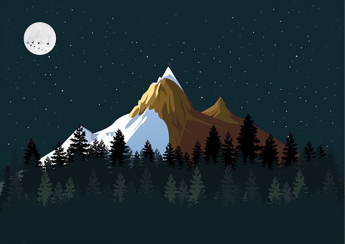

FLORĂ ȘI FAUNĂ
La altitudini înalte, există puține forme de viață care se pot adapta la condițiile climatice extreme. Euophrys omnisuperstes, un păianjen minuscul, a fost descoperit până la altitudini de 6.700 m. Aceste ființe trăiesc în crevase, hrănindu-se cu insecte înghețate aduse de vânt. Este posibil să existe forme de viață microscopice la altitudini și mai mari. [65] Păsări, cum ar fi gâsca cu capul vărgat, au fost găsite zburând la altitudini mari în zona muntelui, iar altele, cum ar fi corbul au fost văzute chiar pe Pasul Sudic (7.920 m),[66] hrănindu-se cu resturi de mâncare sau chiar cu cadavre, rămase în urma expedițiilor.
